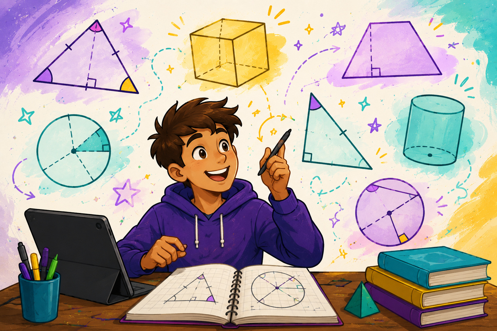

This page is a playground for practising geometry. Every figure here mixes
theorems you have already met —
angle chasing,
similar triangles,
Pythagoras,
circle theorems,
tangents,
cyclic quadrilaterals,
parallelograms
— so the skill is deciding which rule to fire next. Use the tips, peek at a worked
example if you want, then chase as many fresh figures as you like.
A working order
When a mixed figure looks noisy, walk the same short checklist every time:
-
Mark what you are told — equal ticks, parallel arrows, a right-angle box,
a given number. The picture is lying if you leave those invisible.
-
Name the obvious pairs. Two ticks →
isosceles base angles.
Two arrows and a transversal →
alternate or
corresponding.
A radius into a tangent →
right angle.
A chord seen from the middle and from the rim →
twice at the centre.
-
Close a triangle or a line once two of its angles are known —
they add to
180^\circ.
-
Only then reach for a length tool (a ratio, or Pythagoras). Lengths need
an angle skeleton first.
Most mixed problems are three or four of those moves, not ten. The trap is starting in the
middle.
An isosceles triangle stands on one of two parallel lines, apex on the other. One base
angle is given as 50^\circ. Three theorems finish the figure:
given 50^\circ
\Rightarrow isosceles makes the other base angle
50^\circ
\Rightarrow alternate interior copies them onto the top
parallel
\Rightarrow angles on a line leave
80^\circ at the apex.
Chord AB is seen from the centre and from two points on the
remaining arc. Start from the given 30^\circ at
P:
given 30^\circ at the rim
\Rightarrow angle at the centre is
60^\circ
\Rightarrow isosceles (two radii) makes the base angles
60^\circ
\Rightarrow same segment copies
30^\circ to Q.